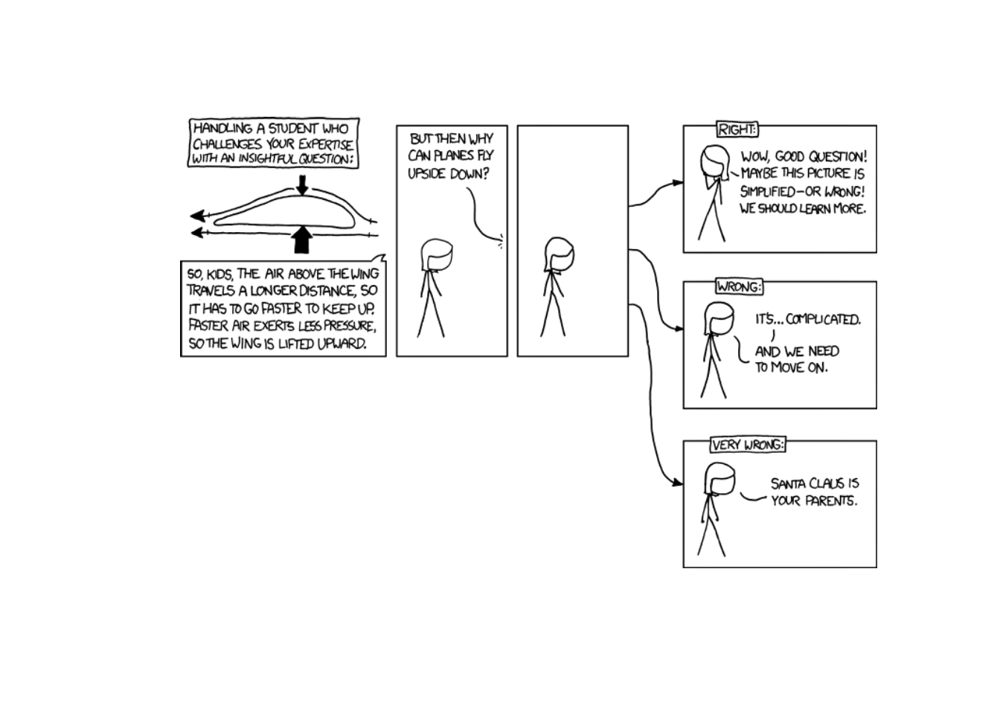
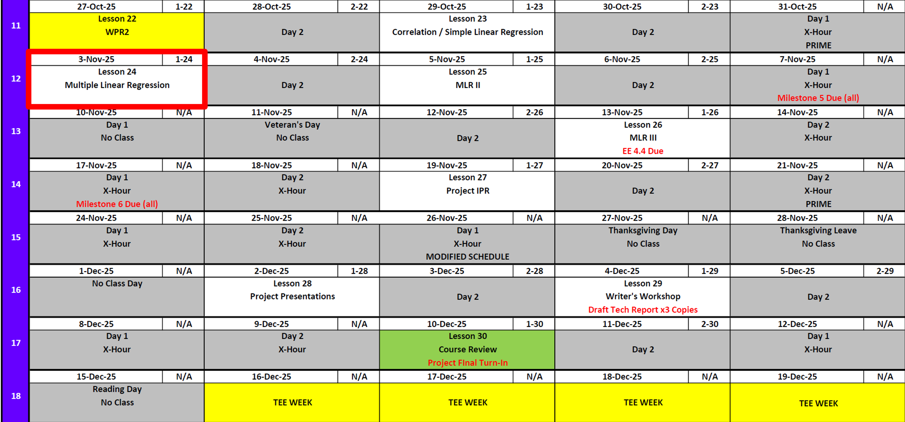
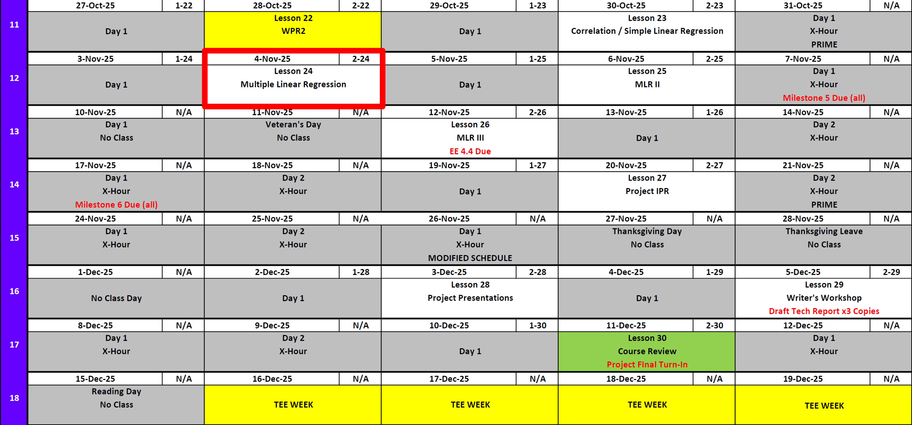
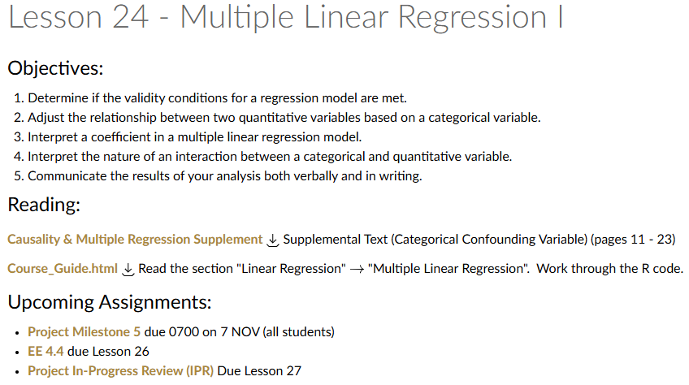
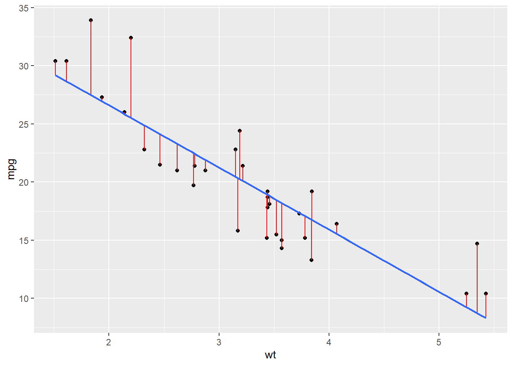
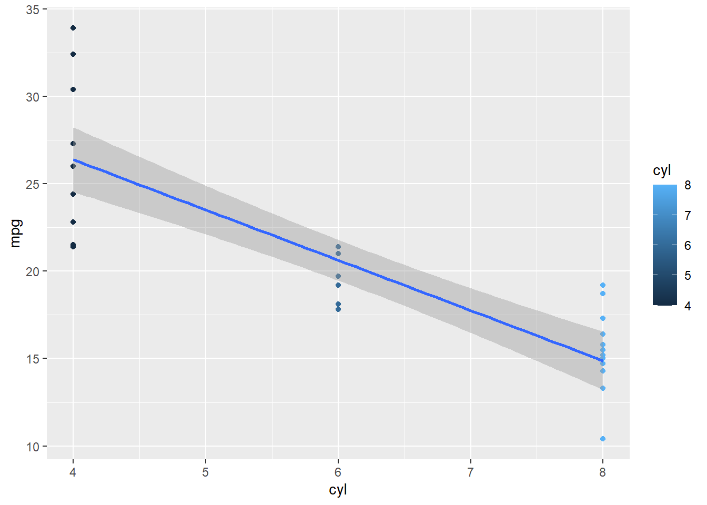

Lesson 24: Multiple Linear Regression I
Lesson Administration
Calendar
Day 1

Day 2


SIL 2 Points
Milestone 5
- Lesson 25.5
- 7 November
- Milestone 5 Instructions
Exploration Exercise 4.4
- Lesson 26
- 12-13 November
- Link: TBD
Milestone 6: Draft Tech Report
- Lesson 26.5
- 17 November
- Milestone 6 Instructions
Project Presentations
Milestone 7
Milestone 8
TEE Times
| Date | Start | End |
|---|---|---|
| Wed, 17 Dec 2025 | 1300 | 1630 |
| Thu, 18 Dec 2025 | 0730 | 1100 |
Cal

Reese

Me

Multiple Linear Regression
Simple Linear Regression: A Reminder
Remember this from last class?

mod <- lm(formula = mpg~wt, data = mtcars)
summary (mod)
Call:
lm(formula = mpg ~ wt, data = mtcars)
Residuals:
Min 1Q Median 3Q Max
-4.5432 -2.3647 -0.1252 1.4096 6.8727
Coefficients:
Estimate Std. Error t value Pr(>|t|)
(Intercept) 37.2851 1.8776 19.858 < 2e-16 ***
wt -5.3445 0.5591 -9.559 1.29e-10 ***
---
Signif. codes: 0 '***' 0.001 '**' 0.01 '*' 0.05 '.' 0.1 ' ' 1
Residual standard error: 3.046 on 30 degrees of freedom
Multiple R-squared: 0.7528, Adjusted R-squared: 0.7446
F-statistic: 91.38 on 1 and 30 DF, p-value: 1.294e-10It gave us this.
\[ \widehat{mpg} \;=\; 37.39 \;-\; 5.34 \, wt \] What if we wanted to know this?
\[ \widehat{mpg} \;=\; \beta_0 \;+\; \beta_1 \, wt + \beta_2 \, hp \]
Do we take 3 partials?
A short aside
Solving for Coefficients in Multiple Linear Regression
Just like in simple linear regression, we still minimize the sum of squared errors — but now our model has multiple predictors.
\[ \begin{aligned} y_i &= \beta_0 + \beta_1 x_{i1} + \beta_2 x_{i2} + \cdots + \beta_p x_{ip} + \varepsilon_i \\[6pt] \mathbf{y} &= \mathbf{X}\boldsymbol{\beta} + \boldsymbol{\varepsilon} \end{aligned} \]
where:
- \(\mathbf{y}\) is an \(n \times 1\) vector of responses
- \(\mathbf{X}\) is an \(n \times (p+1)\) matrix of predictors (including a column of 1’s for the intercept)
- \(\boldsymbol{\beta}\) is a \((p+1) \times 1\) vector of coefficients
- \(\boldsymbol{\varepsilon}\) is the \(n \times 1\) vector of residuals
Step 1: Define the Loss Function
We minimize the sum of squared errors:
\[ S(\boldsymbol{\beta}) = (\mathbf{y} - \mathbf{X}\boldsymbol{\beta})^\top (\mathbf{y} - \mathbf{X}\boldsymbol{\beta}) \]
Step 2: Take the Derivative and Set to Zero
Expanding and differentiating with respect to \(\boldsymbol{\beta}\):
\[ \begin{aligned} S(\boldsymbol{\beta}) &= (\mathbf{y} - \mathbf{X}\boldsymbol{\beta})^\top(\mathbf{y} - \mathbf{X}\boldsymbol{\beta}) \\[6pt] &= \mathbf{y}^\top\mathbf{y} - \mathbf{y}^\top\mathbf{X}\boldsymbol{\beta} - \boldsymbol{\beta}^\top\mathbf{X}^\top\mathbf{y} + \boldsymbol{\beta}^\top\mathbf{X}^\top\mathbf{X}\boldsymbol{\beta} \\[6pt] &= \mathbf{y}^\top\mathbf{y} - 2\,\boldsymbol{\beta}^\top\mathbf{X}^\top\mathbf{y} + \boldsymbol{\beta}^\top\mathbf{X}^\top\mathbf{X}\boldsymbol{\beta} \\[10pt] \frac{\partial S}{\partial \boldsymbol{\beta}} &= \frac{\partial}{\partial \boldsymbol{\beta}} \left( \mathbf{y}^\top\mathbf{y} - 2\,\boldsymbol{\beta}^\top\mathbf{X}^\top\mathbf{y} + \boldsymbol{\beta}^\top\mathbf{X}^\top\mathbf{X}\boldsymbol{\beta} \right) \\[6pt] &= -2\,\mathbf{X}^\top\mathbf{y} + 2\,\mathbf{X}^\top\mathbf{X}\boldsymbol{\beta} = 0 \\[10pt] \mathbf{X}^\top\mathbf{X}\boldsymbol{\beta} &= \mathbf{X}^\top\mathbf{y} \\[10pt] \hat{\boldsymbol{\beta}} &= (\mathbf{X}^\top \mathbf{X})^{-1}\mathbf{X}^\top \mathbf{y} \end{aligned} \] Therefore we now know:
\[ \widehat{mpg} = \hat{\beta}_0 + \hat{\beta}_1 wt + \hat{\beta}_2 hp \]
with
\[ \begin{aligned} \begin{bmatrix} \hat{\beta}_0 \\[4pt] \hat{\beta}_1 \\[4pt] \hat{\beta}_2 \end{bmatrix} &= \left( \mathbf{X}^\top \mathbf{X} \right)^{-1} \mathbf{X}^\top \mathbf{y}. \end{aligned} \]
And should we want to make predictions, we have our ‘hat matrix’
\[ \widehat{\mathbf{y}} = \mathbf{X}(\mathbf{X}^\top \mathbf{X})^{-1}\mathbf{X}^\top \mathbf{y} \]
Now more simply
mod <- lm(formula = mpg~wt+hp, data = mtcars)
summary(mod)
Call:
lm(formula = mpg ~ wt + hp, data = mtcars)
Residuals:
Min 1Q Median 3Q Max
-3.941 -1.600 -0.182 1.050 5.854
Coefficients:
Estimate Std. Error t value Pr(>|t|)
(Intercept) 37.22727 1.59879 23.285 < 2e-16 ***
wt -3.87783 0.63273 -6.129 1.12e-06 ***
hp -0.03177 0.00903 -3.519 0.00145 **
---
Signif. codes: 0 '***' 0.001 '**' 0.01 '*' 0.05 '.' 0.1 ' ' 1
Residual standard error: 2.593 on 29 degrees of freedom
Multiple R-squared: 0.8268, Adjusted R-squared: 0.8148
F-statistic: 69.21 on 2 and 29 DF, p-value: 9.109e-12So we see \(\hat{mpg} = 37.2 - 3.88 \,wt -.03 \,hp\)
- What do we make of our P Values?
- What do we make of the \(R^2\)?
What about this?
mod <- lm(formula = mpg~cyl, data = mtcars)
summary(mod)
Call:
lm(formula = mpg ~ cyl, data = mtcars)
Residuals:
Min 1Q Median 3Q Max
-4.9814 -2.1185 0.2217 1.0717 7.5186
Coefficients:
Estimate Std. Error t value Pr(>|t|)
(Intercept) 37.8846 2.0738 18.27 < 2e-16 ***
cyl -2.8758 0.3224 -8.92 6.11e-10 ***
---
Signif. codes: 0 '***' 0.001 '**' 0.01 '*' 0.05 '.' 0.1 ' ' 1
Residual standard error: 3.206 on 30 degrees of freedom
Multiple R-squared: 0.7262, Adjusted R-squared: 0.7171
F-statistic: 79.56 on 1 and 30 DF, p-value: 6.113e-10Does this make sense?

The reality is that cylinders aren’t continuous so we need to make sure that R is reading them as discrete. (Does this sound familiar to your project?)
mod <- lm(formula = mpg~as.factor(cyl), data = mtcars)
summary(mod)
Call:
lm(formula = mpg ~ as.factor(cyl), data = mtcars)
Residuals:
Min 1Q Median 3Q Max
-5.2636 -1.8357 0.0286 1.3893 7.2364
Coefficients:
Estimate Std. Error t value Pr(>|t|)
(Intercept) 26.6636 0.9718 27.437 < 2e-16 ***
as.factor(cyl)6 -6.9208 1.5583 -4.441 0.000119 ***
as.factor(cyl)8 -11.5636 1.2986 -8.905 8.57e-10 ***
---
Signif. codes: 0 '***' 0.001 '**' 0.01 '*' 0.05 '.' 0.1 ' ' 1
Residual standard error: 3.223 on 29 degrees of freedom
Multiple R-squared: 0.7325, Adjusted R-squared: 0.714
F-statistic: 39.7 on 2 and 29 DF, p-value: 4.979e-09So how do we interpret this?
When we include as.factor(cyl) in our regression, R automatically creates dummy variables for each level of cyl except one (the baseline).
In this case, the model is:
\[ \hat{y} = \beta_0 + \beta_1 \, cyl6 + \beta_2 \, cyl8 \]
where:
- \(cyl6 = 1\) if the car has 6 cylinders, \(0\) otherwise
- \(cyl8 = 1\) if the car has 8 cylinders, \(0\) otherwise
- Cars with 4 cylinders are the baseline group (both dummy variables are 0)
From the regression output, suppose we have:
\[ \hat{y} = 26.7 - 6.92\,cyl6 - 11.6\,cyl8 \]
We can interpret this as:
Intercept (26.7):
The average mpg for 4-cylinder cars (the baseline).Coefficient for cyl6 (-6.92):
On average, 6-cylinder cars have 6.92 mpg less than 4-cylinder cars.Coefficient for cyl8 (-11.6):
On average, 8-cylinder cars have 11.6 mpg less than 4-cylinder cars.
Now with Both Continuous and Categorical Predictors
What if we include both continuous variables (wt, hp) and a categorical variable (cyl) in the same model?
mod <- lm(formula = mpg ~ wt + hp + as.factor(cyl), data = mtcars)
summary(mod)
Call:
lm(formula = mpg ~ wt + hp + as.factor(cyl), data = mtcars)
Residuals:
Min 1Q Median 3Q Max
-4.2612 -1.0320 -0.3210 0.9281 5.3947
Coefficients:
Estimate Std. Error t value Pr(>|t|)
(Intercept) 35.84600 2.04102 17.563 2.67e-16 ***
wt -3.18140 0.71960 -4.421 0.000144 ***
hp -0.02312 0.01195 -1.934 0.063613 .
as.factor(cyl)6 -3.35902 1.40167 -2.396 0.023747 *
as.factor(cyl)8 -3.18588 2.17048 -1.468 0.153705
---
Signif. codes: 0 '***' 0.001 '**' 0.01 '*' 0.05 '.' 0.1 ' ' 1
Residual standard error: 2.44 on 27 degrees of freedom
Multiple R-squared: 0.8572, Adjusted R-squared: 0.8361
F-statistic: 40.53 on 4 and 27 DF, p-value: 4.869e-11This gives the regression equation:
\[ \widehat{mpg} = 35.8 \;-\; 3.18\,wt \;-\; 0.02\,hp \;-\; 3.40\,cyl6 \;-\; 3.18\,cyl8 \]
Let’s use the model to predict fuel efficiency for a 3000-pound, 150-horsepower, 6-cylinder vehicle.
Convert 3000 pounds to the units used in the dataset (wt is in 1000s of lbs):
\[wt = 3.0, \quad hp = 150, \quad cyl6 = 1, \quad cyl8 = 0\]
Then plug the values into the equation:
\[ \begin{aligned} \widehat{mpg} &= 35.8 - 3.18(3.0) - 0.02(150) - 3.40(1) - 3.18(0) \\[6pt] &= 35.8 - 9.54 - 3.00 - 3.40 \\[6pt] &= 19.86 \end{aligned} \]
So the model predicts about 19.9 miles per gallon.
Lets talk P Values
Board Problem
Do this regression for mpg against drat, qsec, and carb.
- Report the regression equation.
- Comment on the significance of each factor.
- Make a prediction for a car with:
drat = 3.9,
qsec = 17.0,
carb = 4.
- Finally, compare your model to the one we built in class.
- Which model explains more variation in
mpg?
- Use \(R^2\) to justify your answer.
- Which model explains more variation in
mpg cyl disp hp drat wt qsec vs am gear carb
Mazda RX4 21.0 6 160 110 3.90 2.620 16.46 0 1 4 4
Mazda RX4 Wag 21.0 6 160 110 3.90 2.875 17.02 0 1 4 4
Datsun 710 22.8 4 108 93 3.85 2.320 18.61 1 1 4 1
Hornet 4 Drive 21.4 6 258 110 3.08 3.215 19.44 1 0 3 1
Hornet Sportabout 18.7 8 360 175 3.15 3.440 17.02 0 0 3 2
Valiant 18.1 6 225 105 2.76 3.460 20.22 1 0 3 1
Solution
Step 1: Fit the regression model
summary(lm(mpg ~ drat + qsec + as.factor(carb), data = mtcars))
Call:
lm(formula = mpg ~ drat + qsec + as.factor(carb), data = mtcars)
Residuals:
Min 1Q Median 3Q Max
-4.1383 -1.2906 -0.0197 1.3672 7.6517
Coefficients:
Estimate Std. Error t value Pr(>|t|)
(Intercept) -3.3191 8.8919 -0.373 0.7122
drat 7.1338 1.0862 6.568 8.58e-07 ***
qsec 0.1230 0.4123 0.298 0.7681
as.factor(carb)2 -2.9057 1.5964 -1.820 0.0812 .
as.factor(carb)3 -4.4547 2.3203 -1.920 0.0668 .
as.factor(carb)4 -8.6308 1.8300 -4.716 8.55e-05 ***
as.factor(carb)6 -4.7118 3.6490 -1.291 0.2089
as.factor(carb)8 -8.7304 3.8314 -2.279 0.0319 *
---
Signif. codes: 0 '***' 0.001 '**' 0.01 '*' 0.05 '.' 0.1 ' ' 1
Residual standard error: 3.044 on 24 degrees of freedom
Multiple R-squared: 0.8025, Adjusted R-squared: 0.7449
F-statistic: 13.93 on 7 and 24 DF, p-value: 4.484e-07The estimated regression equation is:
\[ \widehat{mpg} = 4.81 + 7.15\,drat + .219\,qsec - 1.68\,carb \]
Step 2: Interpret significance
From the regression output:
drat: \(p < 0.05\) — statistically significant.
Higher rear axle ratios (drat) are associated with higher mpg.qsec: \(p < 0.05\) — statistically significant.
Higher quarter-mile times (slower cars) tend to have higher mpg.carb: \(p > 0.05\) — not statistically significant after adjusting for drat and qsec.
Number of carburetors does not appear to have an independent effect on mpg once other factors are considered.
Step 3: Make a prediction
For a car with drat = 3.9, qsec = 17.0, and carb = 4:
\[ \begin{aligned} \widehat{mpg} &= 4.68 + 3.45(3.9) + 1.14(17.0) - 0.75(4) \\[4pt] &= 4.68 + 13.46 + 19.38 - 3.00 \\[4pt] &= 34.52 \end{aligned} \]
Predicted mpg = 34.5 mpg
Step 4: Compare with class model
| Model | Predictors | \(R^2\) |
|---|---|---|
| Class model | wt + hp + as.factor(cyl) |
~0.85 |
| Board problem | drat + qsec + carb |
~0.70 |
- Both models are significant overall.
- The class model (
wt,hp,cyl) has the higher \(R^2\), explaining more variation inmpg.
- Therefore, it provides the better fit and prediction accuracy.
Answer: The drat + qsec + carb model is useful and interpretable, but the wt + hp + cyl model remains stronger because it explains more variation in mpg.
Before you leave
Today:
- Any questions for me?